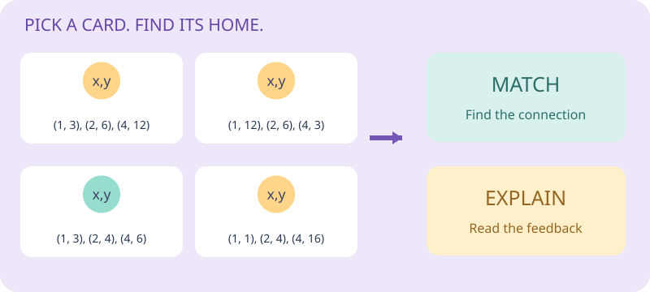
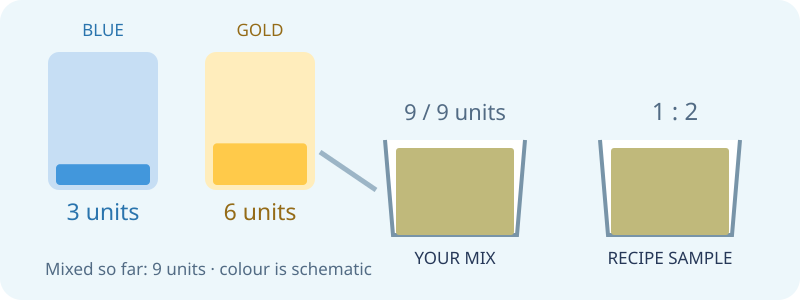
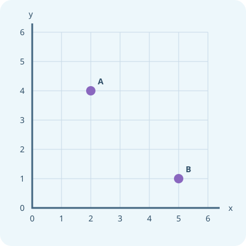
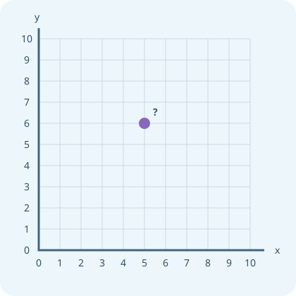

Algebra I Games
7 games to explore variables, coordinate clues, mystery pictures, function machines and proportion. Read the instructions, use the hints and explain your model.

How to play
Drag a card or select it and click its destination. In the workshop, use the controls on the game bench.
Check your board or run the apparatus. Use the picture and reading to see what changed.
Read the explanation. Ask for a hint or reveal a solution, then revisit tricky rounds at the end.

Rule Detectives
Pair each story or table with its rule. Look for a constant ratio, a constant product, or neither.
Play three rounds →Coordinate Quest
Steer to a hidden checkpoint. Translate the story or proportion into an ordered pair on the map.
Play three rounds →
Mystery Machine Mission
Feed numbers into a mystery machine, collect clues and build a two-step rule with operation tiles. Can your rule work for every input?
Play six missions →
Proportion Paintworks
Mix the right colour for a mural, then plan its painting crew. Keep a recipe in direct proportion and trade robots against time using inverse proportion.
Play six missions →
Variable Spotter
Find the quantities that can change in five everyday situations. Choose sensible variables, give x and y a meaning, and distinguish a variable from a stated constant.
Play 7 missions →
Coordinate Detective
Match an ordered pair, a verbal instruction and a plotted point. Find an impostor, then investigate every pair of points sharing an axis coordinate.
Play 11 missions →
Mystery Picture Studio
Plot the print-pack coordinates in order and reveal two pictures. NEW LINE starts a separate stroke. Then create a coordinate challenge of your own.
Play 2 missions →Game inspiration and further exploration
These are original Learning Lab adaptations of documented PhET activity patterns. The numerical challenges, robot crew model and illustrations were created for this unit. Variable Spotter, Coordinate Detective and Mystery Picture Studio adapt the student activities from the Class 1 Variables and Coordinates print pack.
Choose Play for my teacher to record completed game rounds, or Practice to keep them local. Revision Test yourself results are separate in the revision simulator.